Langkah 1

Buka ESS (Utama) atau (Backup) pilih salah satu di menu POSMAIN
Buka ESS (Utama) atau (Backup) pilih salah satu di menu POSMAIN

Klik CARA PENGGUNAAN

Klik ikon Save di pojok kanan atas lalu pilih "OK" jika muncul notif

Klik di kotak This PC
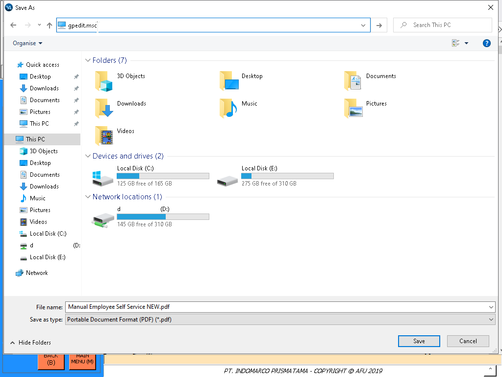
Ketik gpedit.msc lalu enter
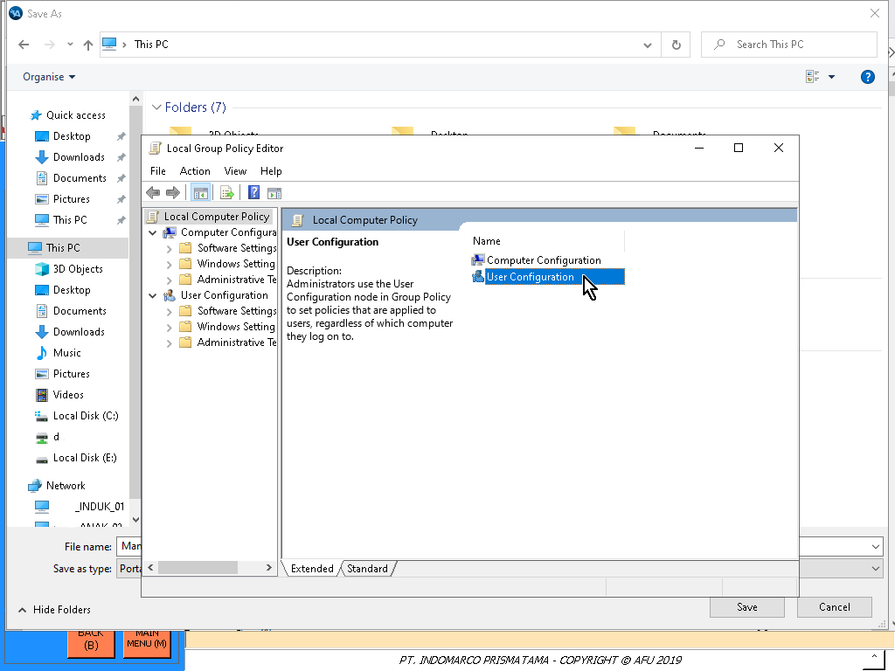
Lalu klik User Configuration
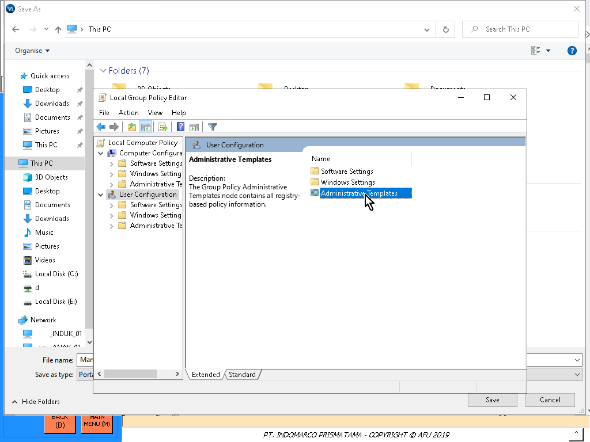
Klik Administrative Templates
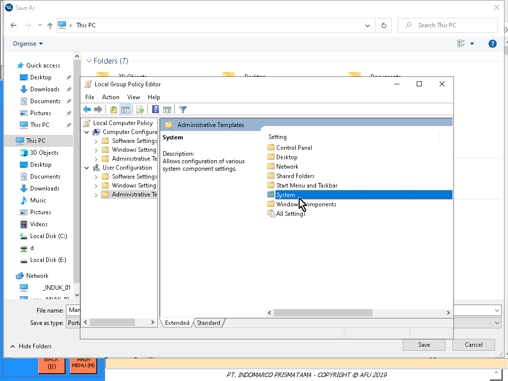
Klik System
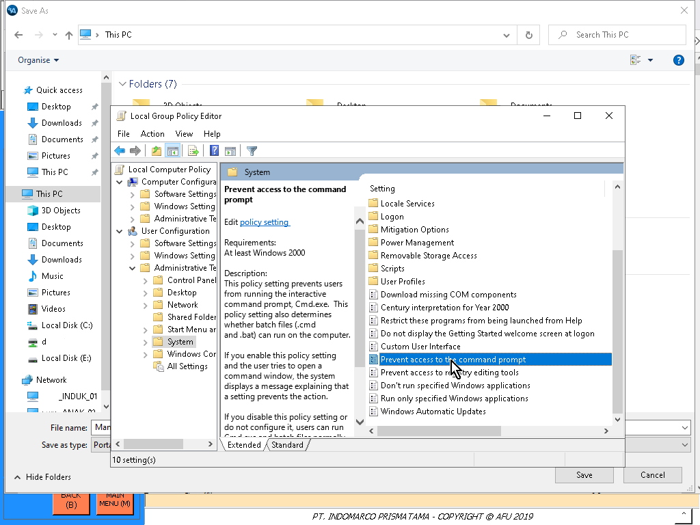
Klik Prevent acces to the command prompt
Pilih Enabled
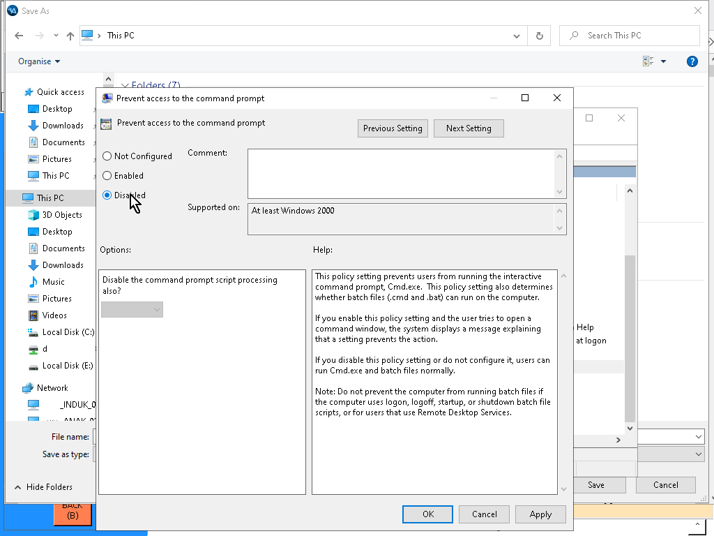
Lalu pilih Disabled
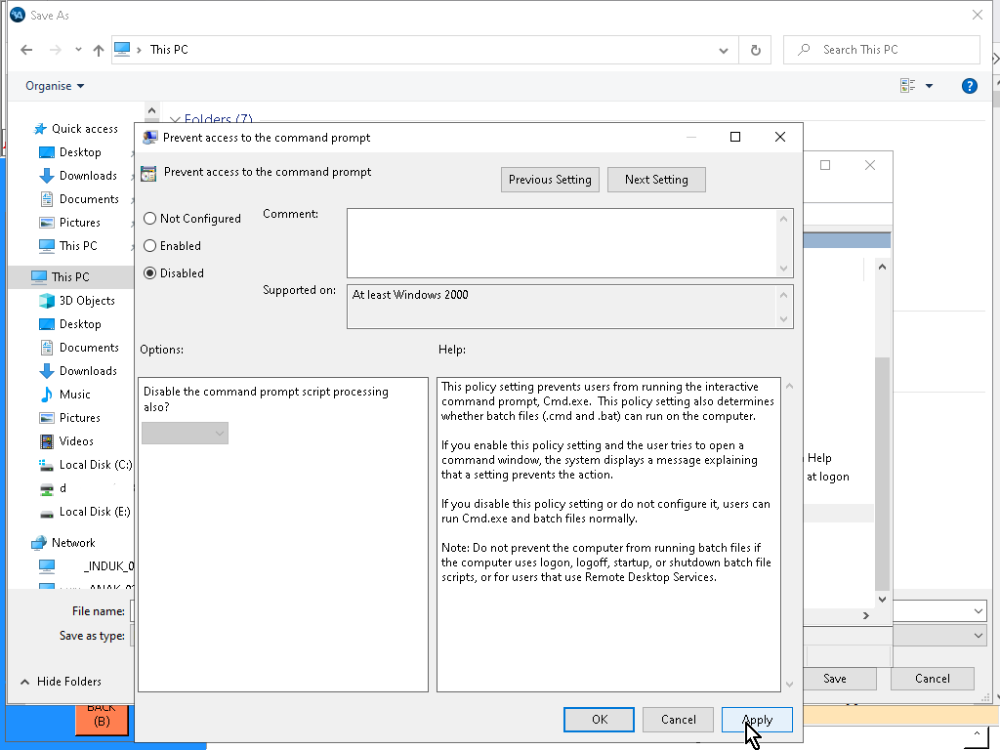
Klik Apply
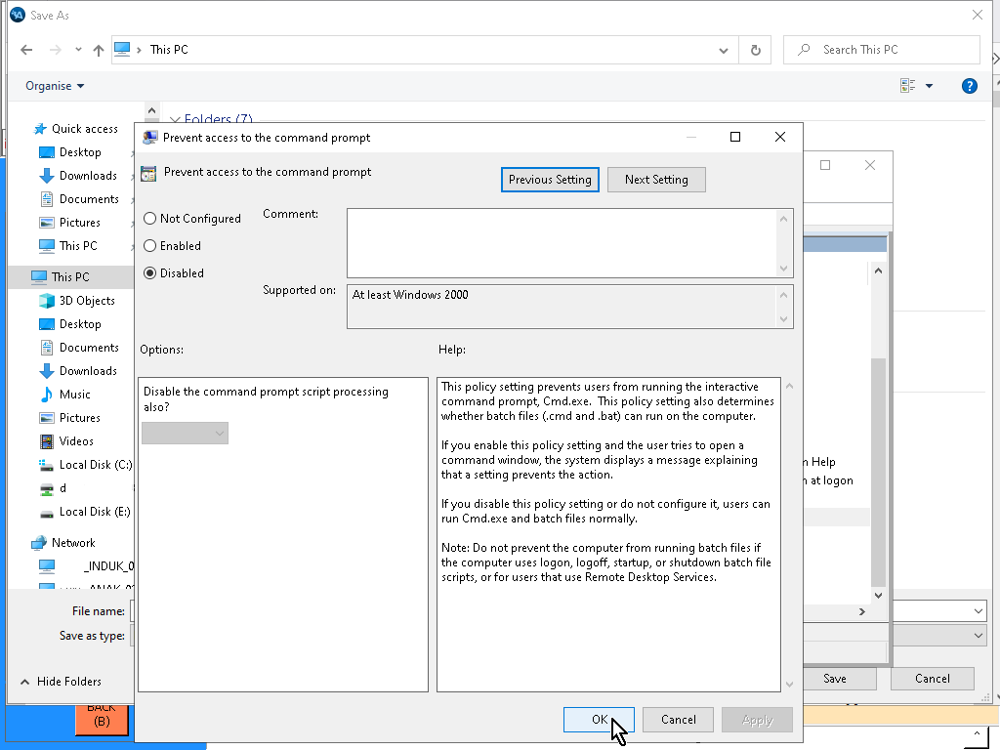
Lalu klik OK
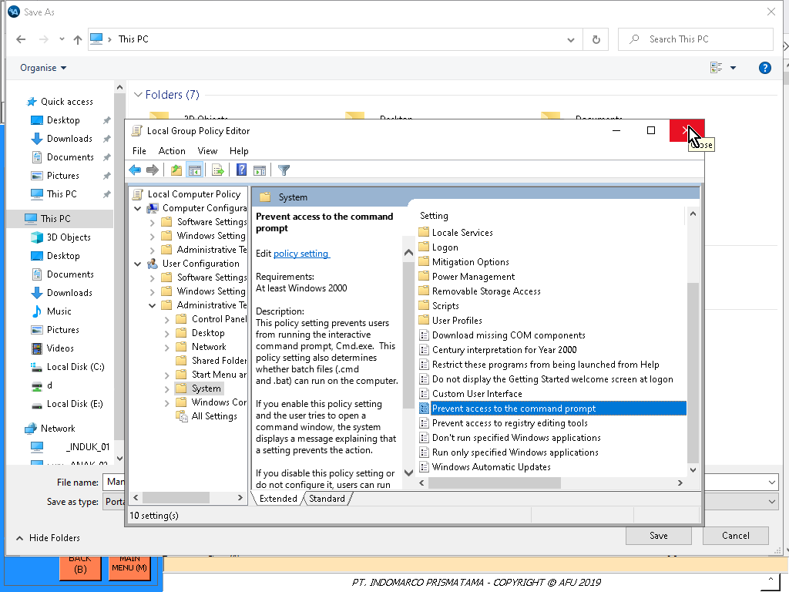
Close gpedit nya
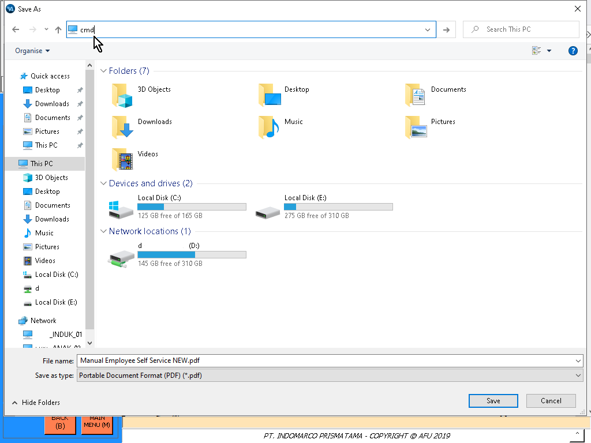
Lalu ketik cmd lalu enter, seperti mengetik gpedit.msc di sebelum nya
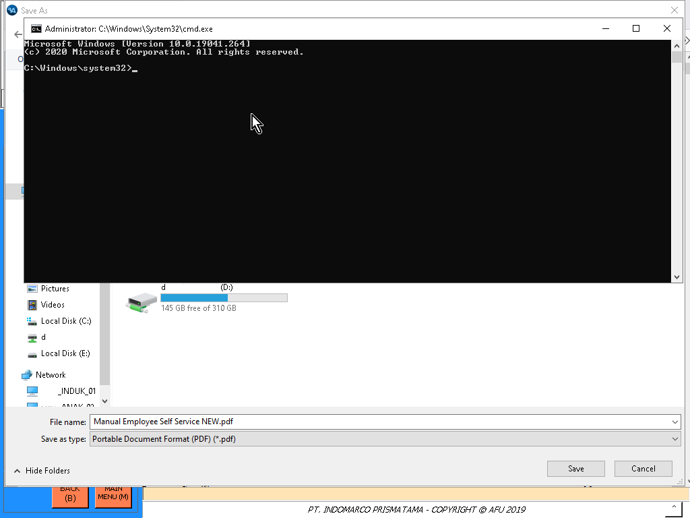
CMD berhasil terbuka